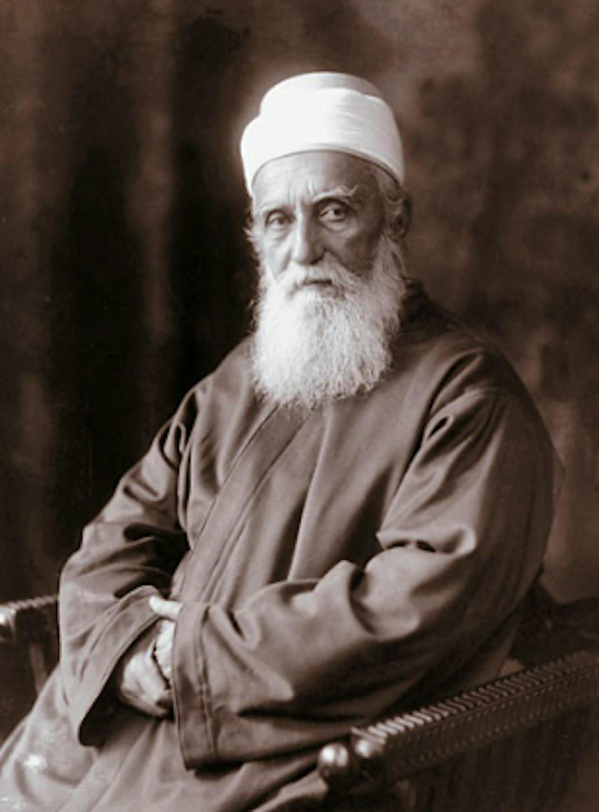
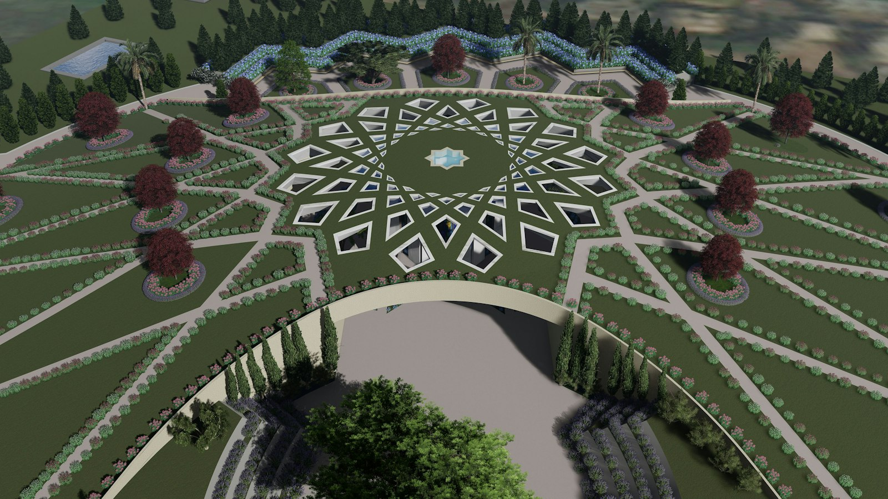
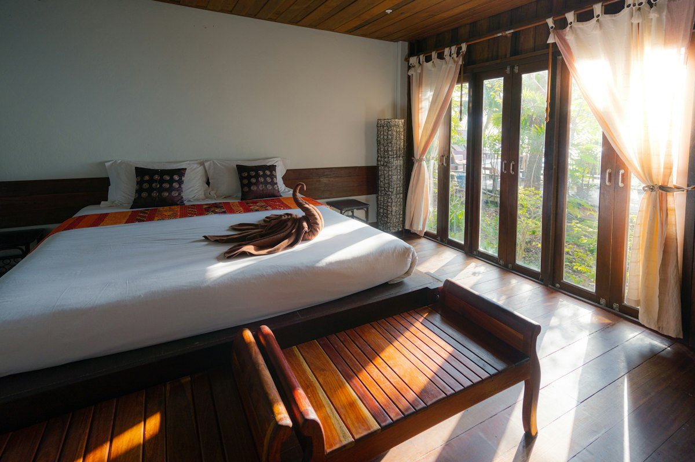
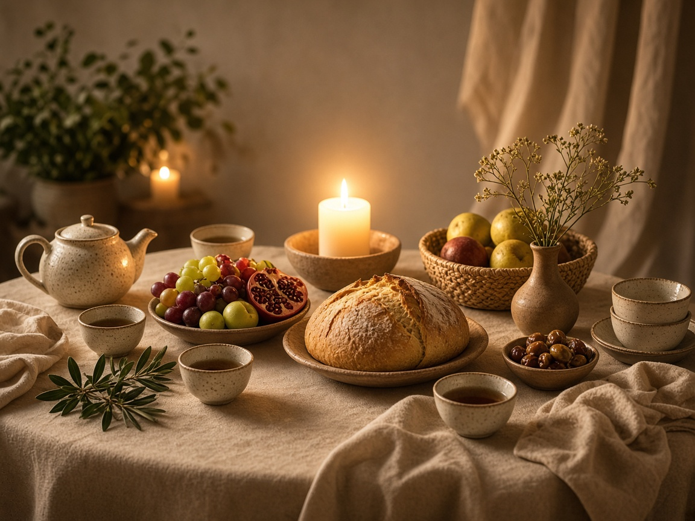
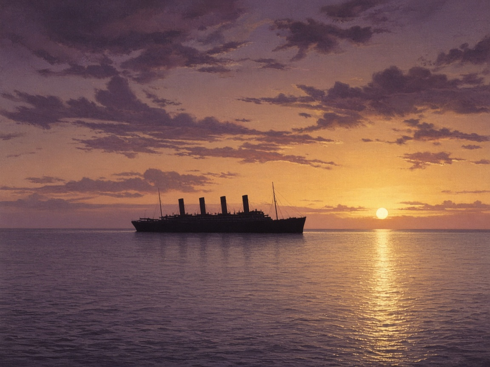

Хайфа · гора Кармель
У Усыпальницы Баба
28 ноября 1921 года Абдул-Баха вознёсся в Хайфе. После всенародных похорон Его останки были положены в комнате Усыпальницы Баба — рядом с Тем, Чьё тело Он сам бережно упокоил на Кармеле в 1909 году.
Приглашение · Минск · 26 ноября
День Завета — вечер в честь Совершенного Примера. Приглашаем вас разделить его вместе с нами.
Одно нажатие — и организатор узнает, что вы будете.

О Нём
Совершенный Пример · Центр Завета
1844 — 1921Абдул-Баха — старший сын Бахауллы и избранный Им Центр Завета. Всю жизнь Он служил людям: утешал страждущих, наставлял ищущих, строил общину и словом, и делом.
После вознесения Бахауллы Он стал щитом единства: хранил Завет, разъяснял учение и явил миру, как выглядит жизнь, посвящённая Богу и служению человечеству.
26 ноября община бахаи отмечает День Завета — день, когда мы вспоминаем Его стан и обновляем верность тому пути, который Он указал.
Вечер
Духовные беседы, песни и номера, фильм к столетию Абдул-Баха, рассказ о Завете и тёплое угощение.
Духовные размышления о жизни Абдул-Баха и смысле Завета — тихие и сердечные.
Просмотр фильма, выпущенного к 100-летию Абдул-Баха — о Его влиянии на сердца людей.
Участники кружка Рухи 8.1 подготовят рассказ по теме Завета — живое слово общины.
Музыка и творческие выступления — то, что поднимает сердце и сближает нас.
Чай и общий стол. Можно принести что-нибудь своё — радость делится легче.
Тёплая встреча друзей общины и всех, кому близки эти идеалы. Двери открыты.
Усыпальница
Его останки покоятся у Усыпальницы Баба на горе Кармель. В мире бахаи возводится новая Усыпальница — отражение Его смирения и величия.
Хайфа · гора Кармель
28 ноября 1921 года Абдул-Баха вознёсся в Хайфе. После всенародных похорон Его останки были положены в комнате Усыпальницы Баба — рядом с Тем, Чьё тело Он сам бережно упокоил на Кармеле в 1909 году.

Сад Ридван · между Аккой и Хайфой
Всемирный Дом Справедливости призвал возвести Усыпальницу Абдул-Баха вблизи Сада Ридван — на дуге между святынями Акки и Хайфы. Здание должно отразить и Его высокий стан, и Его смирение.

«Пыль на пути возлюбленных»
Абдул-Баха желал быть погребённым «под песками между Хайфой и Аккой» — на пути, по которому ступают паломники. В молитве Он просил: «Сделай меня прахом на пути Твоих возлюбленных». Этот образ стал сердцем замысла новой Усыпальницы.
Жизнь
Три коротких рассказа — о служении, путешествии и верности Завету.

В годы заточения Он ходил к бедным и больным, делился хлебом, утешал семьи. Для Него служение не было «делом на потом» — это было дыхание каждого дня. Люди разных вер видели в Нём друга.

В 1911–1913 годах, уже в преклонном возрасте, Он отправился в Европу и Америку. В залах и домах Он говорил о единстве религий, мире и достоинстве каждого человека — и сердца открывались Его любви.
Бахаулла поручил Ему возвести достойную Усыпальницу Баба на Кармеле. Сквозь препятствия и клевету Он довёл дело до конца и в день Навруза 1909 года сам упокоил священные останки — акт верности и любви.
«Сделайте меня прахом на пути Твоих возлюбленных.»
Когда и где
Сбор с 18:30 · начало в 19:00
Минск, пр. Независимости, 12-30 · Национальный Центр бахаиОтветственный: Малышев Сергей
Нажмите смиренно — и сообщение «Я приду» придёт организатору.